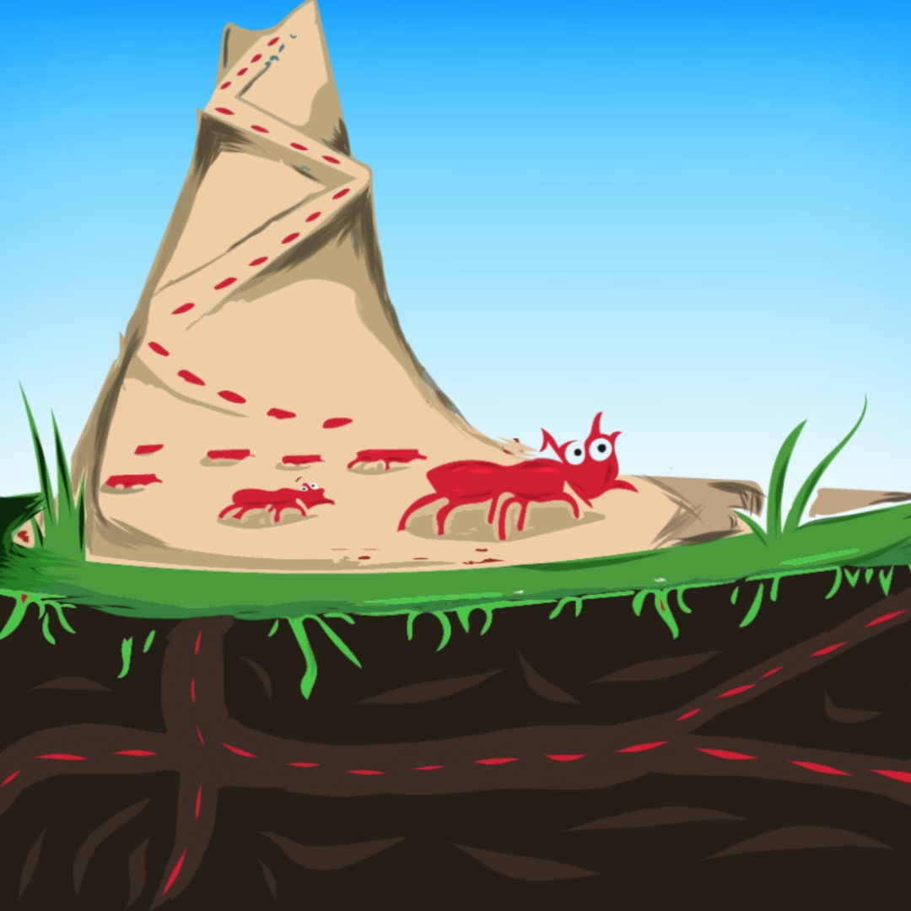

Why and how Ants move in queues
November 12, 2020 4:47pm IST
We have all seen the ants walking along a line towards a food source. But have you thought about how they could be so precise in their movement? Are there any traffic ants or road maker ants that make sure that ants walk in a designated path? They sure don’t have GPS to navigate their way around.
Well, the answer is simple; they use pheromones to do so. Pheromones are of different types. The ants use recruiting pheromones in making trails to food sources. Each ant species has its variety of pheromones to differentiate others’ from their own.
As worker ants leave the nest in search of food, they leave behind a trail of pheromones. Once the worker ant finds out the food source, they use the same trail created by them to come back to their nest. This makes the trail have double the amount of pheromones on the trail, creating a signal for other ants to follow it to reach the food source. The other worker ants then, with the help of the pheromone trail, get to the food source and bring food to their nests.
These pheromones are important for ants to guide them to the food source. In case the trail is wiped out in between due to any reason, one can see them dispersing from that point to find the trail again or to find a food source for which they followed the trail.
One can perform a small experiment to confirm this fact. One has to find a route of ants to the food source and then with an eraser rub the path in order to remove the trail. The ants will then disperse from the starting point of the removed part of that trail and will try to find the rest of the trail.
Author :
ASHWIN SHARMA
Related Articles
Wiggle-waggle for survival
August 27, 2020 10:00am IST
While peacocks are known for their bonnie dance, these peacock spiders are known for hokey pokey dance showing off their stylish fans. Both perform to please the females,

Ants Which Love Electrics
July 7, 2020 8:50pm IST
Yes, you read the title right! These ants, or to be precise, Raspberry Crazy Ants, seems to be attracted to electrical equipments. Nylanderia fulva which is an ant found in South America is not called “crazy” due to their weird infatuation for our gadgets, but because of their random, nonlinear movements...

Camouflage: A strategy for survival
November 12, 2020 6:45pm IST
VertIf we look into the Oxford dictionary for the meaning of camouflage we will get: “the way in which an animal’s colour or shape matches what is around or near it and makes it difficult to see”. They use it as a defensive mechanism as well as an offensive mechanism.

Communication in Insects
August 29, 2020 3:30pm IST
For humans, it is easier to communicate with each other. We have different languages which we speak and sometimes translate so that people from other countries can also understand.